Using the GUI
Menu
▼OpenClose
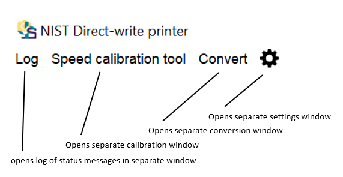
- The "log" button opens a separate window holding a log of all of the status updates in all of the windows.
- The "speed calibration tool" button opens a separate window holding the flow rate calibration tool.
- The "convert" button opens a separate window that converts gcode files into sbp files.
- The "settings"
 button opens a separate window that holds settings for all of the modules
button opens a separate window that holds settings for all of the modules
Settings
▼OpenClose
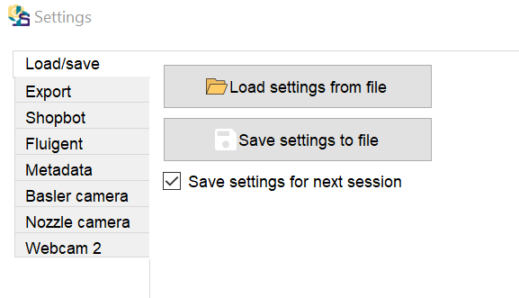
All of the settings can be collectively saved to a .yml file via "Save settings to file." A previously saved settings file can be loaded via "Load settings from file". The checkbox "Save settings for next session" automatically saves all settings to configs/config.yml when the GUI is closed. configs/config.yml is automatically loaded on startup of the GUI.
Export
▼OpenClose
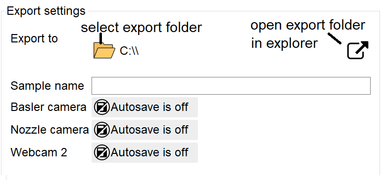
The export settings module sets where files will be saved, what they will be named, and which files to save.
- Use the "Load"
 button to select the folder where files will be exported.
button to select the folder where files will be exported.
- The folder status bar shows what folder files will be exported into
- The "Link"
 button opens the folder in Windows Explorer
button opens the folder in Windows Explorer
- The value in the "Sample name" field is added to all exported files. Depending on the values in the Settings window, the "Sample name" is also the name of the subfolder into which all files are exported.
- The camera buttons
 can be toggled to automatically save or not save videos of the entire print when a file is sent to the Shopbot. The "Basler camera" is the high-resolution camera. The "Nozzle camera" is a webcam pointed at the nozzle. "Webcam 2" is pointed at the entire Shopbot.
can be toggled to automatically save or not save videos of the entire print when a file is sent to the Shopbot. The "Basler camera" is the high-resolution camera. The "Nozzle camera" is a webcam pointed at the nozzle. "Webcam 2" is pointed at the entire Shopbot.
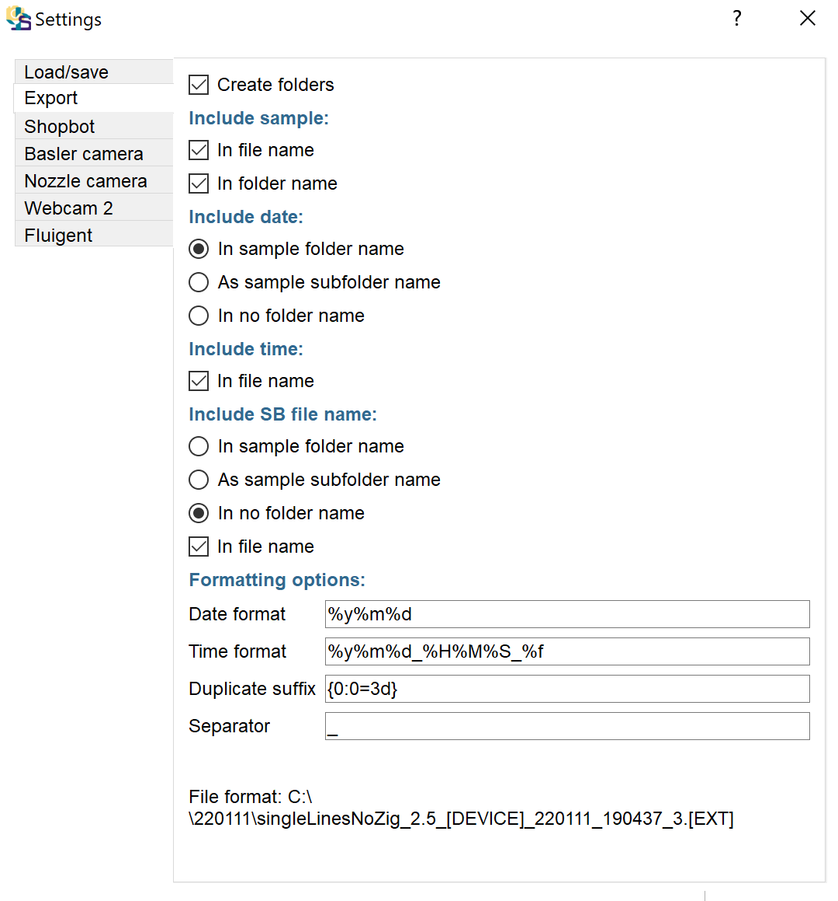
The settings box contains many options for how to name folders. A folder is automatically created for each sample. A subfolder can be automatically created for each shopbot print file.
- To create a subfolder for each sample, select "Create folders"
- To include the sample name in the file name, select "Include sample: In file name"
- To include the sample name in the new folder, select "Include sample: In folder name"
- To make the folder name "[Sample]_[Date]", select "Include date: In sample folder name"
- To create an extra date subfolder inside of the sample folder, such that the folder will be "[Sample]/[Date]", select "Include date: As sample folder name".
- To only put the sample name in the folder and have no separate folder for each date, such that the folder will be "[Sample]", select "Include date: in no folder name".
- To include the time in the file name, select, "Include time: in file name"
- To include the shopbot .sbp file name in the sample folder name, such that the folder name will be "[Sample]_[Date]_[ShopbotFile]", select "Include SB file name: In sample folder name".
- To include the shopbot .sbp file name in the sample subfolder name, such that the folder name will be "[Sample]_[Date]/[ShopbotFile]", select "Include SB file name: As sample subfolder name".
- To leave the shopbot .sbp file name out of the folder names, select "Include SB file name: In no folder name"
- To include the shopbot .sbp file name in the file names, (e.g. a video file will be labeled by what shopbot file was being printed), select "Include SB file name: in file name"
- To change how the date is formatted in file names and folder names, change the "Date format" box. Use the Python strftime format.
- To change how the time is formatted in file names and folder names, change the "Time format" box. It is recommended that the time format include the date, since the date will not otherwise be added to file names. Use the Python strftime format.
- Duplicate suffix is the format to use if there is already an file with the name that you are requesting, and the program needs to add a suffix to the filename to avoid overwriting the existing file. {0:0=3d} adds a 3 digit counter to the end, e.g. 012
- Separator is the character to place in between parts of the file name. E.g. "_" might produce a file called "[Shopbot file name]_[device]_[date].[extension]", and "-" would produce a file called "[Shopbot file name]-[device]-[date].[extension]".
- A sample file name is provided at the bottom of the page and should automatically update.
Shopbot
▼OpenClose
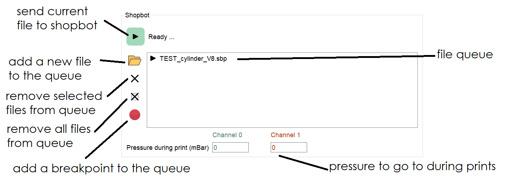
The Shopbot module uses a file queue. The current file is marked with a "Play" icon. The "Play" button sends the current file to the SB3 Shopbot program, which runs the file. Once the file is done, the current file proceeds to the next file. You can use the settings menu to determine whether to autoplay the next file or wait for the user to press play again.
- To add files to the end of the queue, click the "load" button. You can load multiple files at once. To load the same file multiple times, you must use the "load" button multiple times.
- To remove files, click once on each file, then click the "remove"
 button.
button.
- To clear the entire queue, click the "remove all" button.
- To re-order the files, click and drag.
- To select a file as the current file to send to the Shopbot, double click on the file.
- To add a breakpoint when autoplay will pause, click the "breakpoint" button.
- To set the pressure that the pressure controller goes to during printing, use the "pressure during print" box. This can be filled in using the "Use this pressure" button in the speed calibration tool or filled in manually.
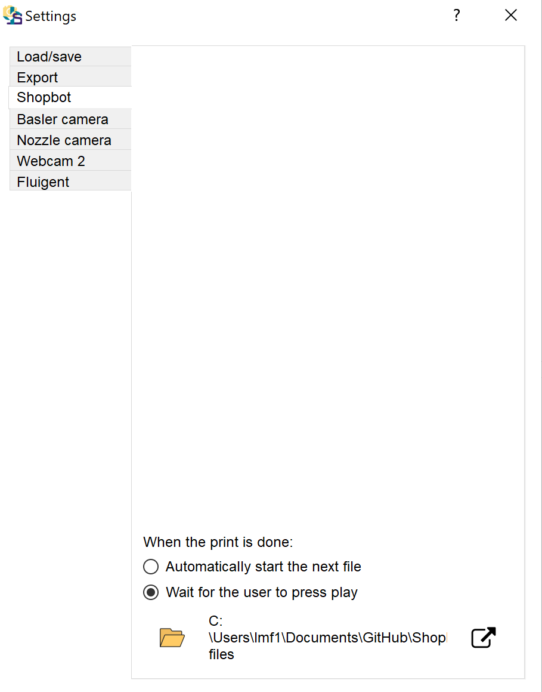
In the settings menu, the user can make many decisions.
- The "Log" option determines how often to write messages to the console.
- "None": No messages will be sent during printing.
- "Just critical": Only major changes in state will be printed to the console during printing.
- "All changes": All changes in target point or pressure will be printed to console during printing.
- "All time steps": Every time the GUI checks the state, it will print a message to the console.
- ".SBP file folder" is the folder that opens when the user clicks the "load" button on the main GUI window. You can change this folder using the "load" button in settings. You can open this folder in Windows explorer using the "link" button .
- File queue: Check "show full path in file queue" to show the full path of every file in the file queue. Otherwise, it will only show the file base name.
- Saving time series: the user can decide what information to include in the "time" table that is exported during each print.
- "Save x,y,z" will save the positions displayed by Sb3.exe, estimated by this GUI, and the target point maintained by this GUI.
- "Save output flag" will save the status of all of the output flags on Sb3.exe to the table.
- "Save data frequency" is how often to write points to the table during a print, in milliseconds.
- "Save metadata and time series for prints without pressure" saves the metadata file and the time file even when the print never turns the Fluigent on and off. This can be useful for saving space when running prints that are purely for taking images.
- When the print is done:
- "Automatically start the next file" means that the next file in the queue will run without the user pressing play, unless the next file is a breakpoint.
- "Wait for the user to press play" means that the user needs to press the play button for every file.
- Pressure strategy
- "Track points, flow speeds, and flags" means that the GUI will step through the points in the .sbp file while Sb3.exe is stepping through the points and try to correct for timing errors that occur in Sb3.exe. If your file has many small moves, this mode might be buggy.
- "Only track flags" means that the GUI will only change pressures and take images based on the status of the output flags. In this mode, you cannot change the ink flow speed, and you may experience mistimed changes in pressure.
- "Burst pressure scaling": When the pressure is first turned on, it will go to the run pressure listed in the main GUI, multiplied by this scaling factor. Set to 1 if you don't want to go to a burst pressure. If you want to burst to a higher pressure at first, set this value greater than 1.
- "Burst pressure length": After going to the burst pressure, the GUI will linearly drop the pressure down to the run pressure over this distance, based on the GUI's estimated of position. The minimum length that will make a difference is the resolution of the Shopbot display, which is on the order of 0.1 mm. If you set this to zero, you will go to the burst pressure and then immediately drop down in the next time step.
- "Crit time on": The GUI will turn the extrusion pressure on this amount of time before the estimated point reaches the target point. This can be useful if there is a transient between turning on pressure and start of flow.
- "Crit time off": The GUI will turn the extrusion pressure off this amount of time before the estimated point reaches the target point. This can be useful if there is a transient between turning pressure off and stop of flow.
- "Zero distance": If a point is within this distance of the target point, the GUI considers it to be at the target point.
- "Check flag frequency": How often the GUI will check the state of the Shopbot, in milliseconds.
- "Run flag": Which flag indicates to the GUI that we are running a file. Turn the flag on before starting any moves in your .sbp file.
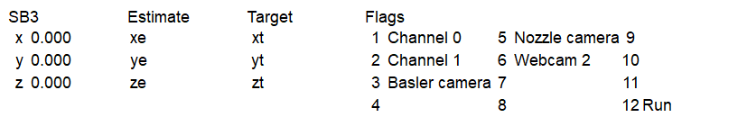
The flag section of the file box in the main window shows the status of the Shopbot.
- The first column is the x,y,z position displayed in Sb3.exe. This position does not necessarily reflect the actual position of the Shopbot. This position is only updated during prints.
- The second column is the x,y,z position estimated by this GUI. This position is only updated during prints.
- The third column is the x,y,z position that this GUI thinks is the next point the Shopbot is going to. This position is only updated during prints.
- The flags are the devices that the 12 output flags of the Shopbot are assigned to. You can change these assignments in the settings menu. These flags will light up during prints.
Metadata
▼OpenClose
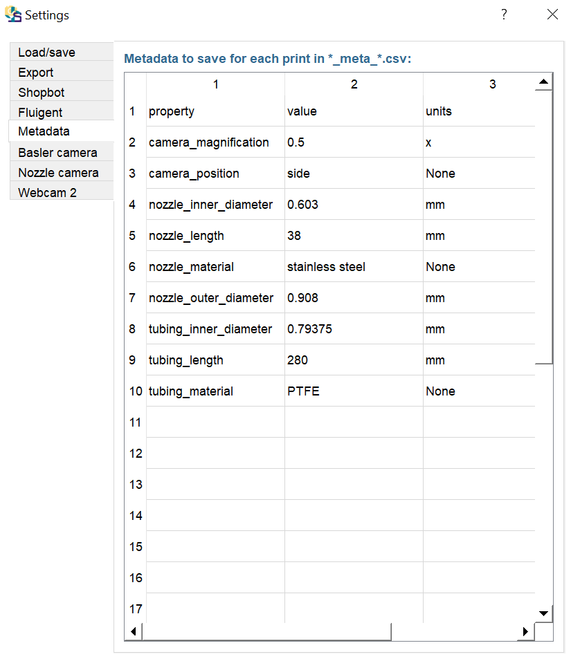
The metadata tab holds a table of values that will be included in the metadata table that is exported with prints. The columns should follow the format property, value, and units. Do not touch row 1, the headers. This table could be used to save any information that you want to be included in metadata about prints.
Fluigent
▼OpenClose
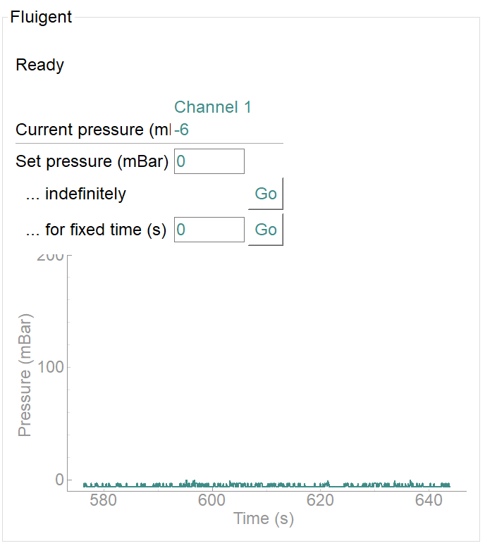
- To turn on the pressure for a certain channel on the Fluigent pressure controller, fill the "Set Pressure" box and either press [Enter] or click the top "Go" button, next to "indefinitely".
- To turn on the pressure for a certain channel on the Fluigent, fill the "Set Pressure" box, fill the "fixed time" box, and click the bottom "Go" button, next to "for fixed time".
- The bottom graph shows the recent pressure graph.
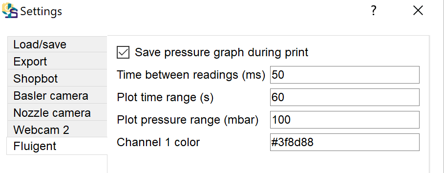
The settings box contains options for plotting and saving Fluigent data
- "Save pressure graph": Check this if you want to include pressure readings in the time table exported during prints.
- "Pressure units": The units in which the pressures will be displayed, saved, and inputted. mbar or kPa are recommended.
- "Time between readings": The frequency at which the software reads the pressure and updates the display.
- "Plot time range": The length of time since the present displayed on the plot.
- "Plot pressure range": The maximum pressure shown on the plot.
- "Channel color": Set the color for this channel displayed in the GUI.
- "Flag": Set the flag that this channel corresponds to. Use this flag number in .sbp files.
Cameras
▼OpenClose
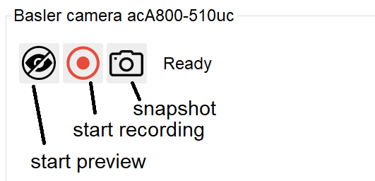
Each camera has its own module. The Basler camera is the high-resolution camera, and the nozzle camera and webcam 2 are webcams.
- To start the live camera preview, click the "start preview"
 button.
button.
- To stop the live camera preview, click the "stop preview" button.
- To start recording, click the "start recording" button. The status bar will show how long the video has been recording, and how many frames have been lost during recording. Lost frames are filled in with duplicates from the last recorded frame, so videos should be as long as the recording time.
- To stop recording and save, click the "stop recording"
 button. The status bar will show how many frames have been written to file.
button. The status bar will show how many frames have been written to file.
- To take a single still, click the "snapshot" button.
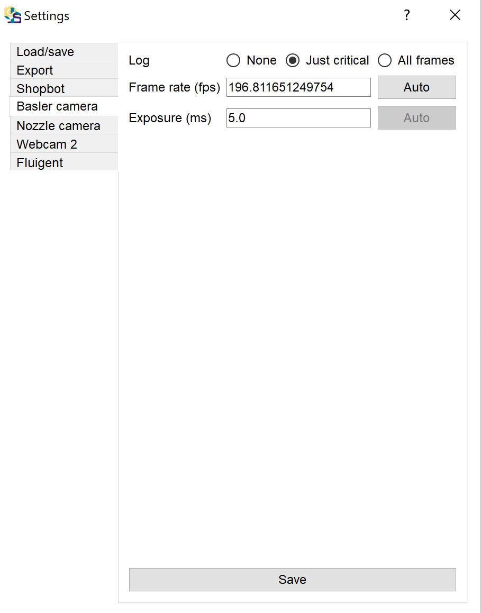
Each camera has its own tab on the settings module.
- "Type" is the name of the camera. This is assigned in the config.yml file.
- "Log": how often to log messages. To log a status update for each frame, change the "log" setting to "All frames". To only log important status updates, select "Just critical". To keep all messages out of the log window, select "None".
- "SB output flag": The flag that this device is assigned to. To take pictures during a print, turn this flag on and off. This is only allowed if there are no pressure changes during the print.
- "Frame rate": Frame rate, in frames per second, at which to read frames. To maximize the frame rate, set the frame rate to a low value (e.g. 1), set the exposure through the "Exposure" field, type [Enter] or click "Save", then click "Auto" next to the Frame rate field. To manually set the frame rate, complete the Frame rate field and type [Enter] or click "Save". If the frame rate is too fast for the exposure time, the program will throw an error.
- "Preview frame rate": How often to send frames to the GUI display. While the recording frame rate will always be at "frame rate", this value for the preview window can be lower than the "frame rate". Setting a lower value here might result in lag in the preview.
- "Exposure": how long, in milliseconds, the camera is exposed to light during a image collection. Auto exposure is not yet implemented.
Conversion Tool
▼OpenClose
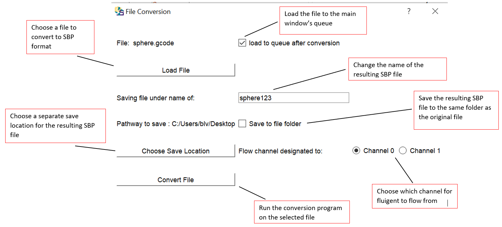
The conversion window can currently take in both STL and GCODE files to be converted into an SBP file. However, if an STL file is inserted, the GUI will only open the Cura slicer. You must first create the GCODE file, save it, and then choose the file within the GUI.
"G-Code file": To add a file to convert, click the "Load File" button . The file name will then be displayed. Click the "link" button to open that file's folder in Windows explorer.
"SBP name": This will default to the original file name, with an .sbp extension. You can change this value if you wish to use a different file name. The extension will still be .sbp whether or not you put it in this field.
"SBP folder": To save the SBP file to the same location as the original file, select 'Same folder as G-Code file'. Otherwise, select "Different folder". This will enable a "load" button that will let you change the target folder, and a "link" button that will open the target folder in Windows Explorer.
"Queue": Check this to add the SBP file to the Shopbot queue when the tool is done converting the .gcode file to .sbp
"Close": Check this to close this popup window when done converting the .gcode file to .sbp.
"Flow channel": Which channel to turn on during printing, when the .gcode file includes extrusion commands.
"Convert G-Code to SBP": Conver the file to .sbp, save it, add to queue if requested, and close this window if requested.
If you exit out of the window accidentally, the window keeps all previous settings. This includes when there is a successful conversion.
Speed calibration tool
▼OpenClose
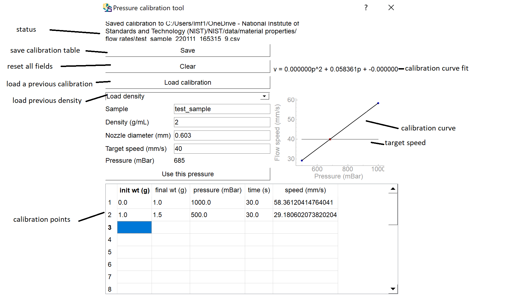
Each time a new ink is loaded onto the printer, the pressure should be calibrated. Pressures can vary based on ink rheology, length of tubing, and pinch points in the tubing. For each pressure channel you are going to use during a session, the calibration process is as follows:
- Set the file folder to save the pressure calibration table to using the "load" button . You can open this folder in Windows explorer using the "link" button .
- Load ink of known density onto printer. Start flow until the tubing is completely full, and ink is exiting the nozzle.
- If you have previously saved the density for this fluid, select the sample from the "Load density" menu. If you type the beginning of the sample name into the "Sample" field, it will narrow the "Load density" list down to samples that start with that value. Selecting an ink loads the Sample name and Density.
- If you have not previously loaded the density for this fluid, fill in the "Sample" and "Density" fields. Clicking "Save" will store this new density in the density.yml file in the configs folder, so it will be available the next time you load the sample.
- Fill in the nozzle inner diameter.
- Fill in the target flow speed
- Mass the container. Fill in "init wt" in row 1. Place container under nozzle.
- In the Fluigent module, put a pressure, e.g. 100, into the "Set pressure" box. Put a time, e.g. 15, into the "fixed time" box. Press "Go", next to the fixed time box. This will turn on the pressure to, e.g. 100 mBar for 15 seconds, then turn it off. It will automatically put the values for pressure and time into the top available row in the calibration table.
- Mass the container. Fill in "final wt" in row 1. This will automatically fill in the "speed" value for row 1 and plot it on the graph.
- Repeat previous 3 steps at varying pressures, filling in rows 2 and beyond until the calibration curve no longer shifts with additional points.
- When you are done with calibration, click "Use this pressure". This will take the "Pressure" value for the given target speed and fill the pressure into the "Shopbot" module, so Channel 1 will turn to that pressure during printing. You can also fill this value in manually in the "Shopbot" module. If you put changes in ink speed into your .sbp file (see Writing SBP files), the GUI will read the change out of the file, update the target speed box, and update the run pressure box accordingly.
- Click "Save" to save the entire calibration table and metadata to the export folder.